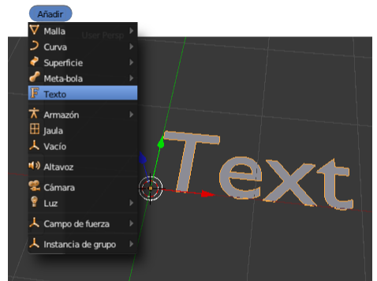
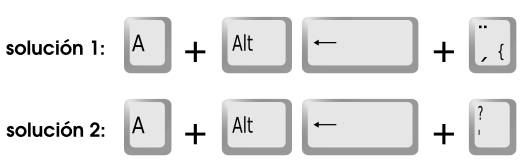
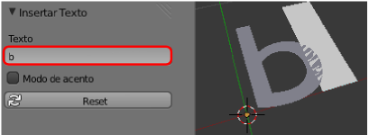
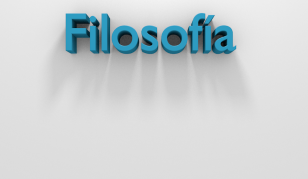

Textos
A llegado la hora de trabajar con textos. Tras sacar un objeto de este tipo (Añadir/Texto) lo que obtenemos es un texto de muestra Text

En Modo Objeto  se comporta como cualquiera de los objetos que ya hemos estudiado, con las mismas posibilidades de escalado, rotación y desplazamiento. Lo único que no responderá a nuestras expectativas es un escalado en Z ("SZ"). Para añadirle la tercera dimensión habrá que usar nuevos recursos.
se comporta como cualquiera de los objetos que ya hemos estudiado, con las mismas posibilidades de escalado, rotación y desplazamiento. Lo único que no responderá a nuestras expectativas es un escalado en Z ("SZ"). Para añadirle la tercera dimensión habrá que usar nuevos recursos.
En Modo Edición  se comportará como si estuviéramos en un editor de textos convencional; podemos añadir texto, borrar...
se comportará como si estuviéramos en un editor de textos convencional; podemos añadir texto, borrar...
Como cualquier otro objeto cuenta con su correspondiente panel  ; y es ahí donde vamos a otorgarle la tercera dimensión. Nos interesa la botonera Geometría
; y es ahí donde vamos a otorgarle la tercera dimensión. Nos interesa la botonera Geometría
- Extrusión. No debe suponer ninguna novedad la consecuencia que tiene en nuestro texto aumentar este parámetro.
- Profundidad. Se refiere al biselado del borde. En principio le aplica uno recto de 45º.
- Resolución. Un aumento de este parámetro supone un redondeo del bisel.
Posible problema con las tildes
Si las tildes no aparecen correctamente con el método habitual debemos usar esta alternativa:
- Escribir la letra que va acentuada.
- Regresar un caracter con "Alt+Borrar".
- Pulsar la tecla propia de la tilde (en ocasiones puede que la tecla adecuada sea la que incluye la tilde con el signo de interrogación.

Otra solución que debe funcionar es pegar el texto una vez escrito y copiado desde una aplicación exterior como un editor de texto. El lugar para pegarlo aparece en las opciones del objeto en el cuadro Herramientas ("T"). Hay que prestar atención porque el campo para pegarlo sólo se hace visible mientras escribimos texto en el editor Vista 3D.
Ejercitación
- Haz una cabecera para una presentación. Usa la iluminación básica y apoya el texto sobre un plano. Si juegas con la posición de la lámpara y con la posición de la cámara puedes obtener algo así
